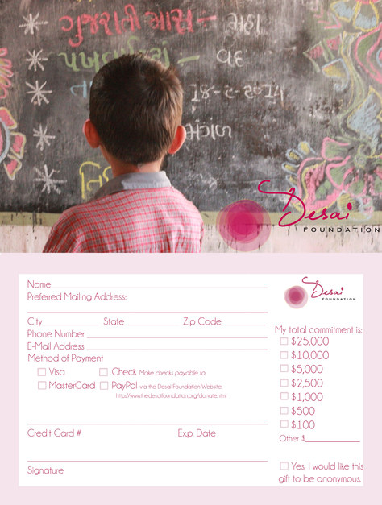
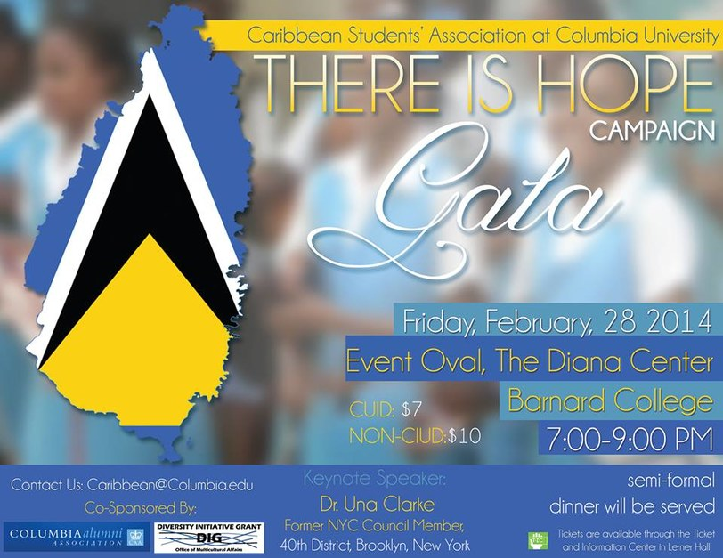
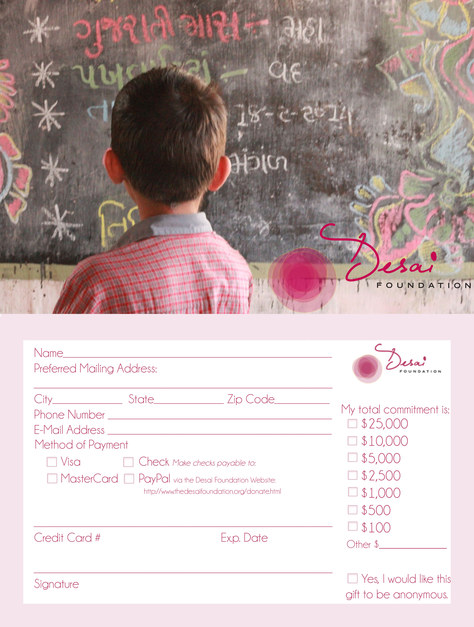
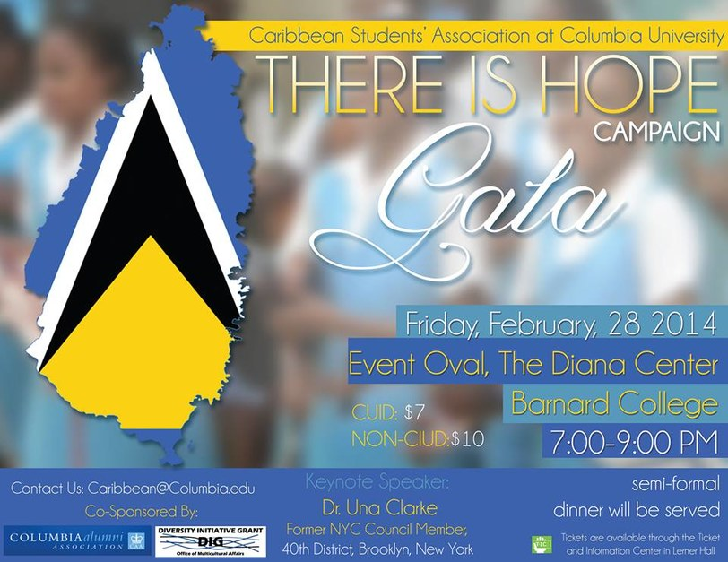

Hi, I am Monica.
I am passionate about creating a more enjoyable and accessible internet. I am learning how to transform data into narrative at the Lede Program at Columbia's School of Journalism. I co-founded the Athena Digital Design Agency, a NYC-based web agency.
Currently, I am making the workplace more colorful at Jopwell, creating websites and exploring data practices.
Get in Touch


 


